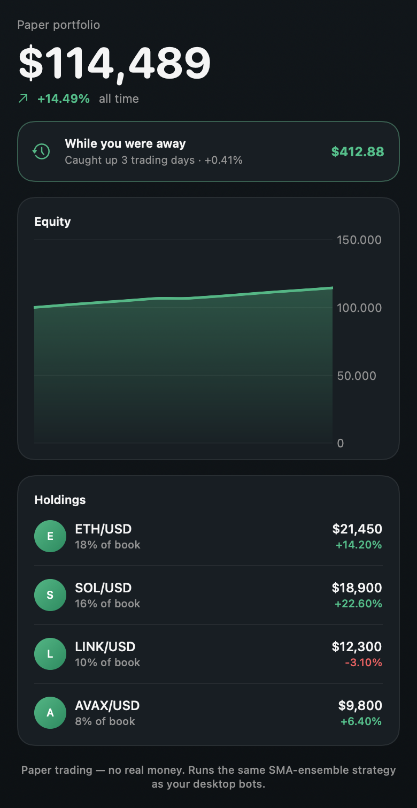
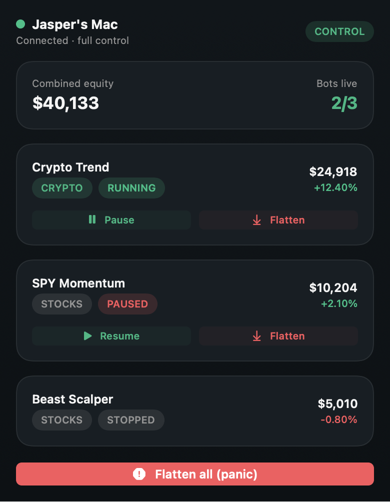

No Trade Studio cloud account.
Broker credentials are encrypted and stored on your machine. The product runs locally and can keep working without a vendor account server.
QUIET SOFTWARE FOR MARKETS THAT KEEP MOVING
Run your own automated trading bot on your own computer. Your broker, your keys, your machine—stocks, crypto and forex, in paper or live mode.
Free paper trading · latest release v1.6.4 · your keys never leave your computer
THE WHOLE PRODUCT / AT A GLANCE
01 / THE DESK
Trade Studio is a local-first desktop bot and dashboard. It turns market indicators into transparent rules, places orders through the connection you choose, and keeps the stop button close.

Broker credentials are encrypted and stored on your machine. The product runs locally and can keep working without a vendor account server.
Classic indicators, visible entry and exit rules, risk limits, trade history and CSV export. Nothing claims guaranteed profit.
02 / START
Use the macOS or Windows installer. Trade Studio adds a normal app and desktop shortcut.
Pick one of six external broker backends or start immediately with the built-in Simulator.
Add credentials in the setup wizard. Trade Studio checks the connection read-only before saving.
The bot starts paused, lives in your tray and can be paused or flattened whenever you need.
03 / PRINCIPLES
Your keys stay encrypted on your computer.
Practice risk-free, then go live only when you decide.
Install, connect, choose a strategy and resume.
Classic indicators and visible rules—not an AI black box.
Open, pause or quit without keeping a window in front.
Equity, positions, win rate, history and risk in one view.
04 / STRATEGIES
Every strategy is explainable and available for unlimited paper testing.
Momentum and mean-reversion rules combine Bollinger Bands, RSI, MACD, volume and breakout context.
Balanced · Patient · Aggressive presetsWaits for price to regain intraday value, then uses confirmation and risk limits before acting.
Built for US-stock sessionsA slower daily-candle system designed to hold established trends overnight with fewer decisions.
Longer horizon · lower activityLOCAL-FIRSTYour system. Your orbit.Your market and controls held in one clear view.
05 / IPHONE
The iPhone app has two clear jobs. Paper simulator mode runs locally on the phone. Remote mode pairs to the desktop with one combined code and sends end-to-end encrypted controls.
Phone-local simulatorPractice stocks and crypto without a desktop connection.
Encrypted remoteSee bots, positions and equity, then pause, resume or flatten.
One-code pairingNo license key field on the phone; the desktop remains license-gated.


06 / CONNECTIONS
Seven ready backends across stocks, crypto and forex. Paper trading is free on every connection.
No account or API keys. Instant paper stocks and crypto.
BUILT IN · FREEUS stocks and crypto with paper trading and fractional shares.
US STOCKS · CRYPTOUS stocks and options with a developer sandbox.
STOCKS · OPTIONSStocks and ETFs for EU/UK users with practice mode.
STOCKS · ETFS100+ exchanges such as Coinbase, Kraken and Binance through CCXT.
CRYPTO · TESTNETSForex and CFDs with practice accounts.
FOREX · CFDSGlobal multi-asset access through the local IB Gateway.
GLOBAL · MULTI-ASSETAll seven are wired today. Broker names are compatibility references; Trade Studio is not affiliated with them.
07 / COMMUNITY
Join the Trade Studio Discord to talk strategy, compare paper results, get help, see update notes and catch giveaways.
Join the Discord ↗08 / MODE
Trade with simulated money through a broker paper account or the built-in Simulator. There is zero real-money risk, so you can learn how the bot behaves before risking a cent.
Connect a funded broker account to place real orders. Live mode is gated behind explicit confirmation and clear warnings because losses are real.
09 / PRICING
Subscribe only when you want live accounts with real money. Paid plans are being prepared. Download now and use unlimited paper trading for free.
Unlimited paper accounts, the full dashboard and all three strategies.
Download freeOne live account, alerts, schedules, portfolio view, analytics and mobile remote control. €90/year instead of €140.
Everything in Solo plus three live accounts, portfolio protection, weekly reports and crypto presets. €190/year instead of €290.
Launch pricing ends August 4, 2026. Early subscribers keep their launch price.
| Feature | Paper€0 | Solo€9/mo | Plus€19/mo |
|---|---|---|---|
| Unlimited paper bots | ✓ | ✓ | ✓ |
| Classic · VWAP Reclaim · Swing Trend | ✓ | ✓ | ✓ |
| Patient · Aggressive · Active presets | Balanced only | ✓ | ✓ |
| Live trading with real money | — | 1 account | Up to 3 |
| Trading schedules | — | ✓ | ✓ |
| Auto-pause drawdown and loss-streak limits | — | ✓ | ✓ |
| Discord and Telegram trade alerts | — | ✓ | ✓ |
| Combined portfolio equity view | — | ✓ | ✓ |
| Trade analytics and CSV export | — | ✓ | ✓ |
| Portfolio-wide drawdown protection | — | — | ✓ |
| Weekly Discord/Telegram report | — | — | ✓ |
| Crypto trading and crypto presets | — | — | ✓ |
| Local-first broker credentials | ✓ | ✓ | ✓ |
| Free auto-updates | ✓ | ✓ | ✓ |
10 / QUESTIONS
Paper trading is free forever: unlimited practice accounts and no card. Live Solo is €9/month and Live Plus €19/month during the launch offer; standard pricing is €14/€29 after August 4, 2026. You may also need a broker account, unless you use the built-in Simulator.
No. Broker credentials are stored only on your own machine. Trade Studio has no account server and does not upload them.
There are no guarantees. Trade Studio runs rules-based strategies; it is not financial advice or a money machine. Trading carries risk of loss. Start on paper.
A Mac or Windows 10/11 PC. Add one of the seven supported connections or use the built-in Simulator. No Python is required.
Yes. The release links always point to the newest build, and the installed app can update itself.
The current Mac build is not notarized yet. Drag Trade Studio into Applications, then run xattr -dr com.apple.quarantine "/Applications/Trade Studio.app" once in Terminal. On Windows SmartScreen, choose More info → Run anyway.
Yes. Live mode places real orders with real funds and can lose money. It is gated behind explicit confirmation. Practice on paper first.
Pause from the dashboard at any time, flatten open positions if needed, or quit completely from the system-tray icon.
11 / SUPPORT
Every report gets read. Include what you did, what happened and the app version from Settings.
Describe the problem without needing an email app. It goes straight to the developer.
Talk strategies, show results, ask other users for help and catch giveaways.
Join Discord ↗Open a public issue and follow the fix from report to release with a free GitHub account.
Open an issue ↗12 / DOWNLOAD
Free for macOS and Windows. Paper trading stays free forever, and the buttons always target the latest release.
Latest release v1.6.4 · free auto-updates after installation
FIRST LAUNCH ON MACOS
xattr -dr com.apple.quarantine "/Applications/Trade Studio.app"FIRST LAUNCH ON MACOS
The current Mac build is not notarized yet, so macOS may say it cannot be opened or is damaged. Drag Trade Studio into Applications, open Terminal, and run this once:
xattr -dr com.apple.quarantine "/Applications/Trade Studio.app"Then open Trade Studio normally. This only clears the quarantine flag attached to the download.